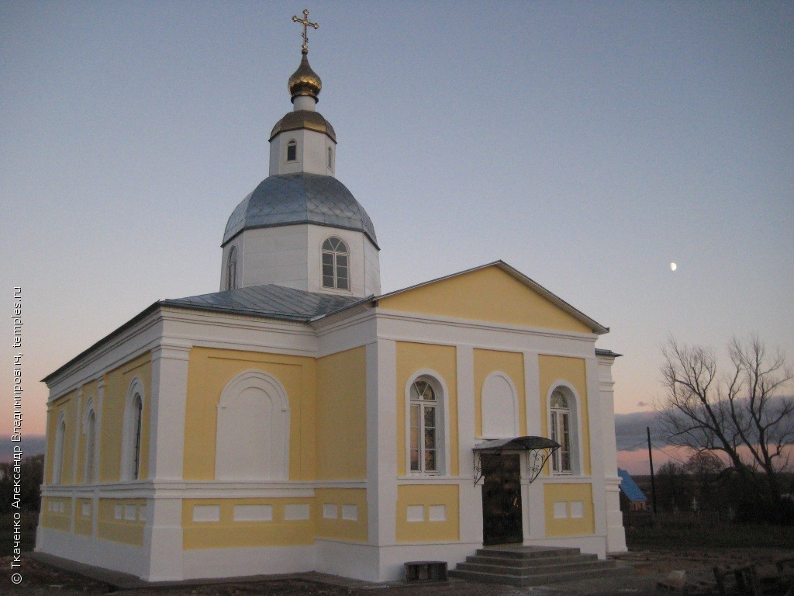

с. Мишино
Впервые с. Мишино, что на р. Ямна, упоминается в платежных книгах 1594-1597 гг. В окладных книгах 1676 г. в селе значится Никольская церковь с 64 приходскими дворами, в их числе 3 двора боярских. Каменный Никольский храм строился на средства поручика П. С. Меженинова с 1856 по 1865 г. В храме устроен один Казанский придел. В годы гонений храм закрыли и разорили, устроив там семенной склад. От здания уцелел лишь нижний ярус трапезной.
В селе Мишино родились: герой Русско-турецкой войны 1877-1878 гг. генерал А. П. Меженинов (1834-1910); его брат, выдающийся инженер-путеец и ученый Н. П. Меженинов (1836-1901); здесь прошли детские и девичьи годы киноактрисы В. Г. Орловой (1894-1976).